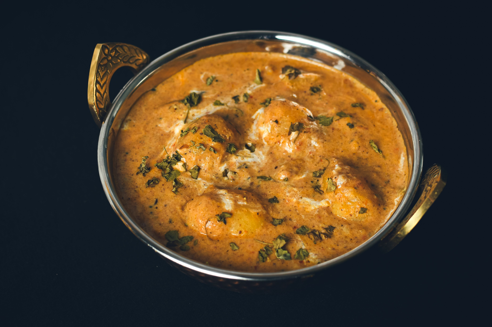
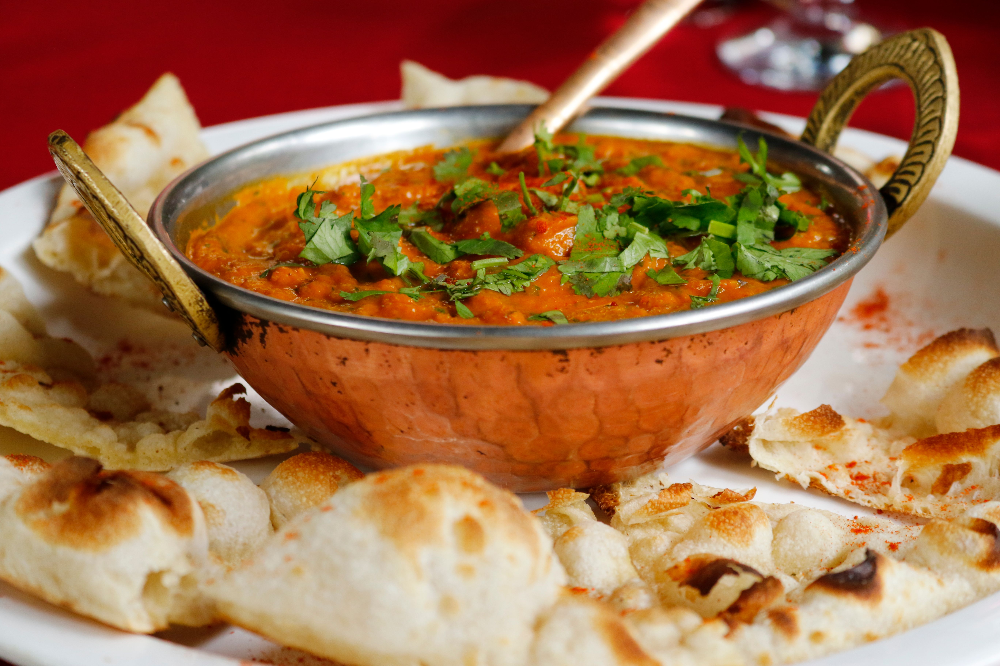
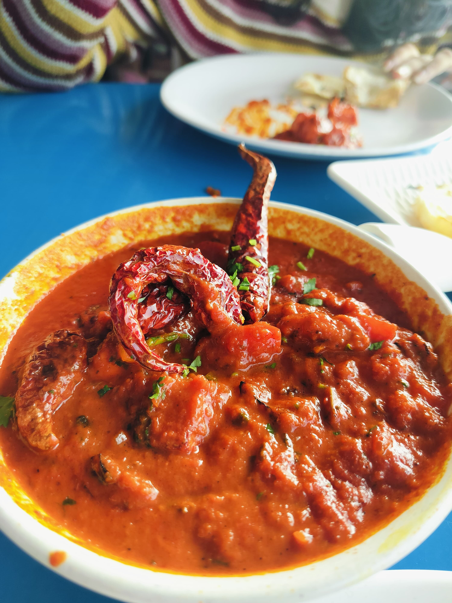

Taj Mahal Indian Cuisine
North and South Indian cooking in Metairie since 1982, family run, with a lunch buffet and banquet rooms.
About
Taj Mahal Indian Cuisine is a family-run North and South Indian restaurant, the first Indian restaurant in New Orleans, opened in 1982 and on Metairie Road since 1992. The restaurant offers a lunch buffet, takeout, private banquet rooms, and a full bar.
Menu
Starters
Mains
Desserts
Good to know
Lunch buffet and banquet rooms
The restaurant runs a lunch buffet and offers private banquet rooms for groups, alongside takeout and a full bar.
Gallery


All gallery photos are stock photos, labeled as such. They show the kind of work and setting described on this page, not this business.
Visit
Address: 923 Metairie Rd, Metairie, LA 70005
Hours: Closed Tuesday. Lunch Monday and Wednesday through Sunday, dinner 5:30-10pm. Lunch start varies by listing (11am or 11:30am), so call to confirm the lunch start.
Phone: +1 504-836-6859
Contact
Taj Mahal Indian Cuisine serves Metairie. Questions? Call +1 504-836-6859.